Práctica 3.1.- Instalación de Tomcat
1.- Instalación de Tomcat
El primer paso para instalar Tomcat será abrir el puerto por defecto usando el comando:
sudo ufw allow 8080.
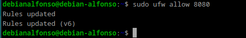
Después ejecutamos un sudo apt update para actualizar los paquetes.
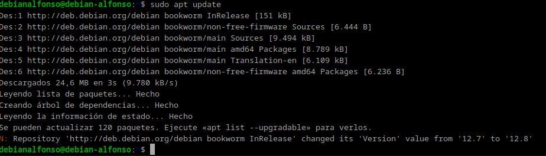
El siguiente paso será instalar Java mediante el comando:
sudo apt install default-jre.
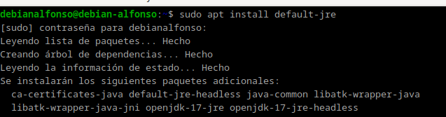
Verificamos la versión instalada de java con java -version.
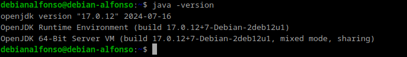
Ahora instalamos Apache Tomcat y el Tomcat-admin a través del comando
sudo apt install tomcat10 tomcat10-admin.
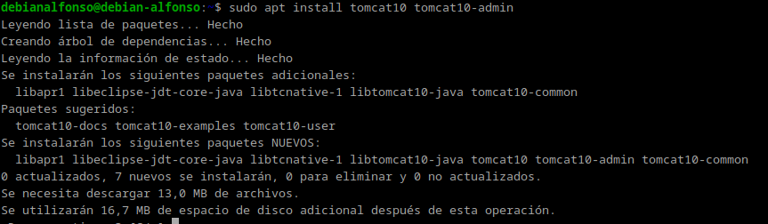
Tras instalar Tomcat, modificaremos el archivo tomcat_users.xml con el comando:
sudo nano /etc/tomcat10/tomcat_users.xml y deberemos añadir:
<role username="manager-gui> />
<user username="manager" password="TuContraseña" roles="manager-gui />
Tras añadirlo en nuestro fichero, el archivo quedará de la siguiente forma:
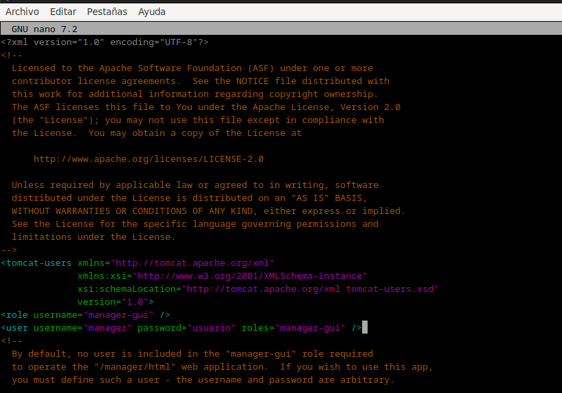
Ahora que tomcat ya está instalado y nuestro usuario manager-gui creado, comprobamos que esta instalado correctamente a través de los comandos:
sudo systemctl start tomcat10
sudo systemctl status tomcat10
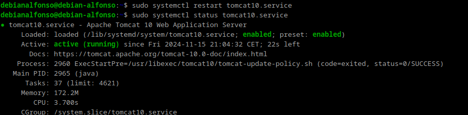
Si todo ha ido bien, accedemos en el navegador a la dirección localhost:8080/manager/html, donde debe aparecernos algo así:
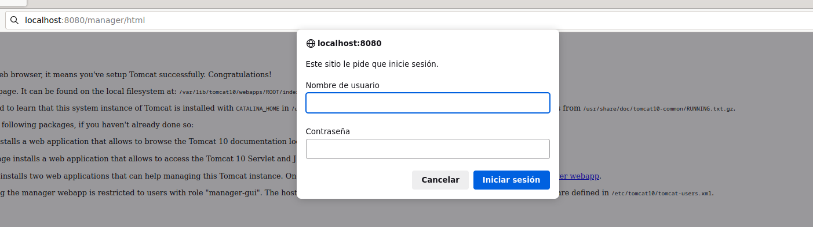
Al iniciar sesión, deberá aparecernos esta pantalla.
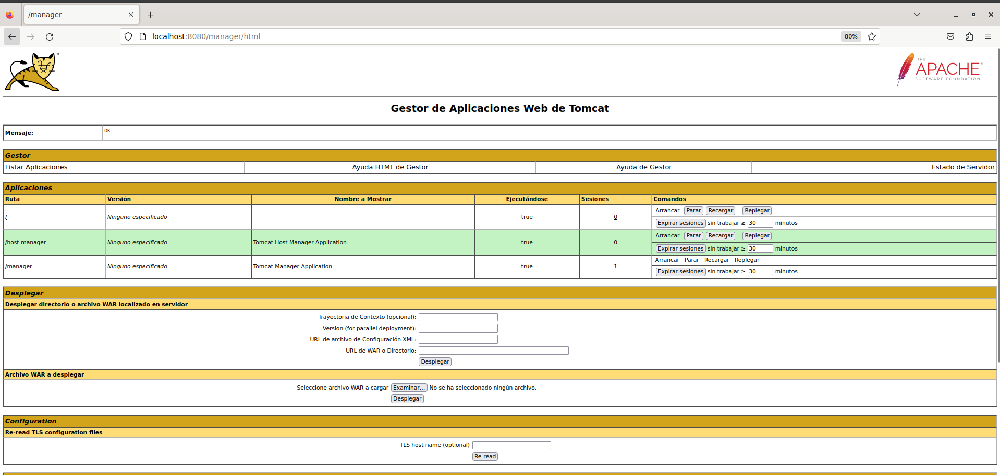
2.- Despliegue manual mediante la GUI de administración
Ahora vamos a realizar un despliegue de una aplicación .WAR, para ello:
- Iniciamos sesión con el usuario previamente creado.
- Buscamos el apartado que nos permite desplegar una aplicación:
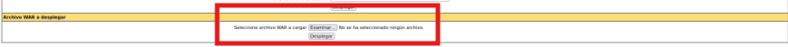 - Buscamos la sección que nos permite desplegar un WAR manualmente y seleccionamos nuestro archivo. En mi caso el siguiente archivo: https://tomcat.apache.org/tomcat-6.0-doc/appdev/sample/
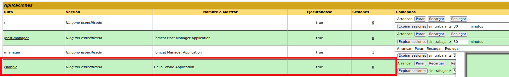 - Por último accedemos a
localhost:8080/sampley veremos el contenido de nuestro .war y se vería algo así:
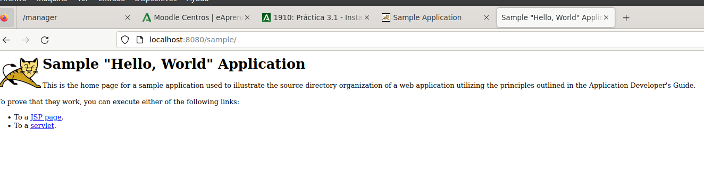
3.- Despliegue con Maven
Ahora desplegaremos una aplicación realizada con Maven, para ello deberemos:
-
Actualizar los repositorios con
sudo apt update.
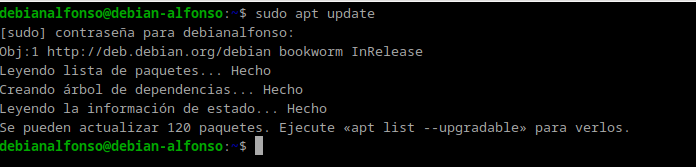 -
Instalamos Maven con
sudo apt install maven.
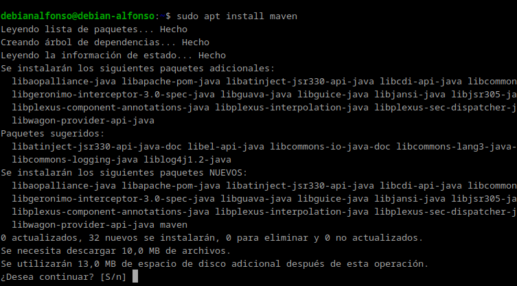 -
xxComprobamos que Maven se ha instalado correctamente viendo la versión instalada con el comando
mvn --v.
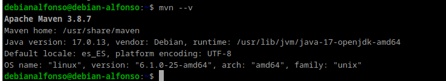
3.1.- Configuración de Maven
-
Por temas de seguridad, deberemos tener 2 usuarios, uno que tenga el rol de
manager-scripty otro que tengamanager-gui. Para ello, modificaremos el archivo de usuarios de Tomcat con
sudo nano /etc/tomcat10/tomcat-users.xml.
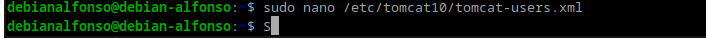 -
Añadimos un nuevo rol para manager-script y el nuevo usuario, donde le asignaremos una contraseña que nosotros queramos.
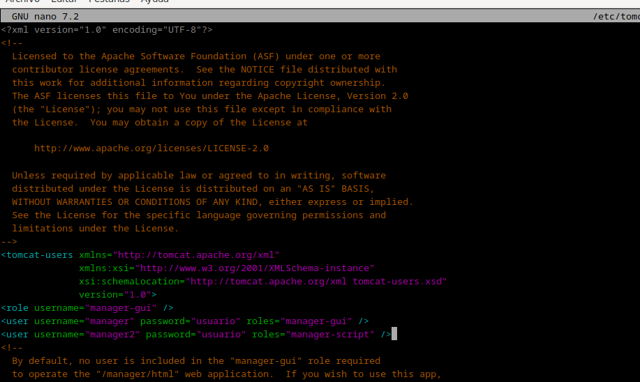 Guardamos los cambios conCtrl + Oy salimos conCtrl + X. -
Ahora editamos el archivo
etc/maven/settings.xmlpara indicarle a Maven, un identificador para el servidor sobre el que vamos a desplegar.
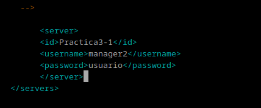 -
Modificamos el POM del proyecto para que haga referencia a que el despliegue se realice con el plugin de Maven. Para esto, clonaremos un repositorio de github con el comando
git clone https://github.com/cameronmcnz/rock-paper-scissors.git
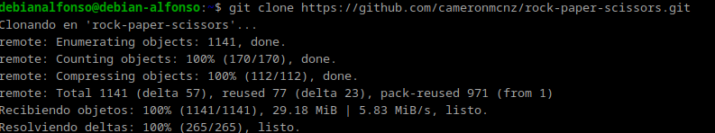 -
Nos siutuamos dentro del proyecto que hemos creado con:
cd rock-paper-scissors
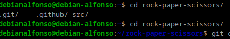 -
Cambiamos de rama:
git checkout patch-1
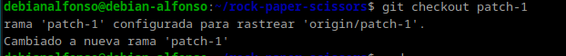 -
Tras esto, editamos el archivo POM con el comando
sudo nano pom.xml.
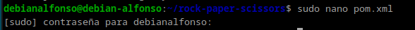 -
Añadimos el siguiente bloque
<plugin>
<groupId>org.apache.tomcat.maven</groupId>
<artifactId>tomcat7-maven-plugin</artifactId>
<version>2.2</version>
<configuration>
<url>http://localhost:8080/manager/text</url>
<server>IdDeTuServer</server>
<path>/myapp</path>
</configuration>
</plugin>
-
Quedaría de la siguiente forma:
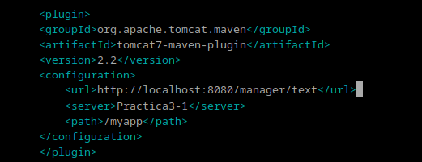 -
Hacemos un deploy con el comando
mvn tomcat7:deploy
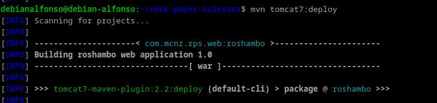Si todo ha ido bien, nos aparecerá un mensaje de color verde que pondrá Build Success, indicandonos que se ha desplegado correctamente:

-
Por último, accedemos a nuestro navegador a la dirección
localhost:8080/tuPath, donde tuPath es el path que hayas configurado en el pom.xml del proyecto, y deberiamos ver lo siguiente:
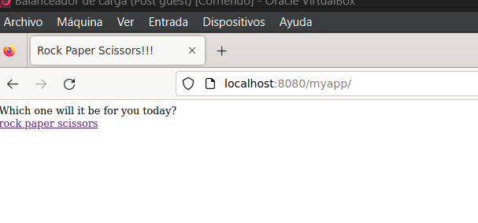
4.- Cuestiones
- Habéis visto que los archivos de configuración que hemos tocado contienen contraseñas en texto plano, por lo que cualquiera con acceso a ellos obtendría las credenciales de nuestras herramientas.
En principio esto representa un gran riesgo de seguridad, ¿sabrías razonar o averigüar por qué esto está diseñado de esta forma?
Esta diseñado de esta manera por simplicidad y compatibilidad ya que Tomcat no incluye por defecto un sistema que cifre o gestione las contraseñas. Esto es un gran problema de seguridad ya que cualquier persona podría acceder a los datos sin estar autorizadas.
Una solución para cifrar las contraseñas y resolver este problema de seguridad sería a través del la herramienta Apache Tomcat Jasypt.